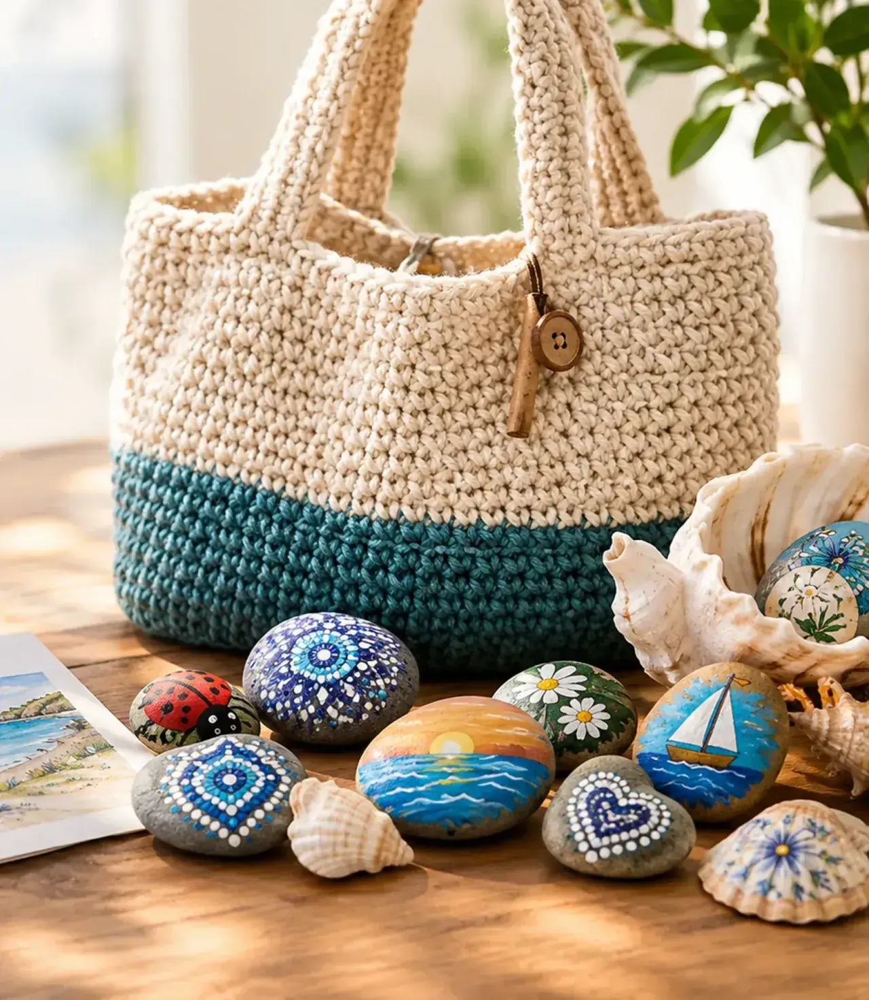

Available



Vancouver Island, BC
Knit bags, painted beach finds, and keepsake cards — one-of-a-kind pieces gathered and made on Vancouver Island.
Gathered on local Vancouver Island beaches. Painted, knit, and finished by hand — one pebble, shell, bag, and card at a time.
A few ready pieces — claim by email or Instagram DM. Island pickup available.


Shop ready pieces, find a gift for the moment, or request something made just for you.